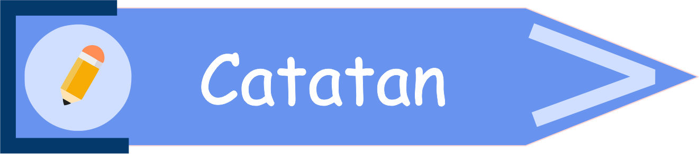

4.3 SELISIH DUA HIMPUNAN
 Prasyarat (klik saya)
Prasyarat (klik saya)- Siswa sudah mampu menyatakan notasi dari suatu himpunan
- Siswa sudah mampu menyebutkan anggota dari suatu himpunan.
- Siswa sudah mampu menyatakan himpunan.
- Siswa sudah mampu menentukan himpunan semesta dari suatu himpunan.
- Siswa sudah mampu menggambar diagram venn.
- Siswa sudah mampu menentukan irisan himpunan.
- Siswa sudah mampu menentukan gabungan himpunan.
Setelah mempelajari topik ini, diharapkan siswa mampu menentukan selisih dari dua himpunan.
Selisih dua himpunan, misal pada himpunan A terhadap himpunan B, adalah himpunan yang anggotanya merupakan anggota himpunan A yang bukan anggota himpunan B, dalam artian "anggota himpunan A saja". Selisih himpunan A terhadap himpunan B dinotasikan dengan A − B, dibaca A selisih B. Banyak anggota selisih himpunan A terhadap himpunan B dinotasikan dengan n(A − B).

Perhatikanlah contoh di bawah ini!
Diketahui C = {1, 3, 5, 7} dan D = {3, 4, 5, 6}. Tentukanlah C − D dan D − C!
Penyelesaian :
- C − D
-
Perhatikan kembali himpunan C dan himpunan D, apakah ada anggota himpunan C yang juga merupakan anggota himpunan D?
Jawabanmu tepat! Ups! Jawabanmu masih keliru.
Terdapat anggota himpunan C yang juga merupakan anggota himpunan D. Apa saja itu? Coba kalian sebutkan dengan mengisi kotak kosong di bawah ini
*isilah setiap kotak dengan 1 angka
,Jawabanmu tepat! 3 dan 5 merupakan anggota himpunan C yang juga merupakan anggota himpunan D.C = {1, 3, 5, 7} dan D = {3, 4, 5, 6} -
Perlu diingat kembali, selisih dua himpunan adalah himpunan yang anggotanya merupakan anggota himpunan pertama yang bukan anggota himpunan kedua. Maka, 3 dan 5 kita coret/hilangkan dari himpunan C
3, 5, 7}
*isilah setiap kotak dengan 1 angka
,Jawabanmu tepat! Sehingga, selisih himpunan C terhadap himpunan D adalah :C − D = {1, 7} dengan n(C − D) = 2
-
Perhatikan kembali himpunan C dan himpunan D, apakah ada anggota himpunan C yang juga merupakan anggota himpunan D?
-
D − C
-
Kita sudah mengetahui bahwa 3 dan 5 merupakan anggota himpunan D yang juga merupakan anggota himpunan C. Maka untuk menentukan D − C, anggota 3 dan 5 kita coret/hilangkan dari himpunan D
3, 4,5, 6}
*isilah setiap kotak dengan 1 angka
,Jawabanmu tepat! Sehingga, selisih himpunan D terhadap himpunan C adalah :D − C = {4, 6} dengan n(D − C) = 2
-
Kita sudah mengetahui bahwa 3 dan 5 merupakan anggota himpunan D yang juga merupakan anggota himpunan C. Maka untuk menentukan D − C, anggota 3 dan 5 kita coret/hilangkan dari himpunan D

*catatlah ke dalam buku catatanmu 😄
- Notasi pembentuk himpunan dari selisih himpunan A terhadap himpunan B adalah : A − B = {x | x ∈ A dan x ∉ B}.
- Kata "dan" berarti kedua syarat harus dipenuhi. Dengan kata lain, x adalah anggota himpunan A dan x bukan anggota himpunan B.